Painter
Brushes, selections, layers, masks and a finish layer for matt to bare metal, on the flat sheet and the 3D model side by side.
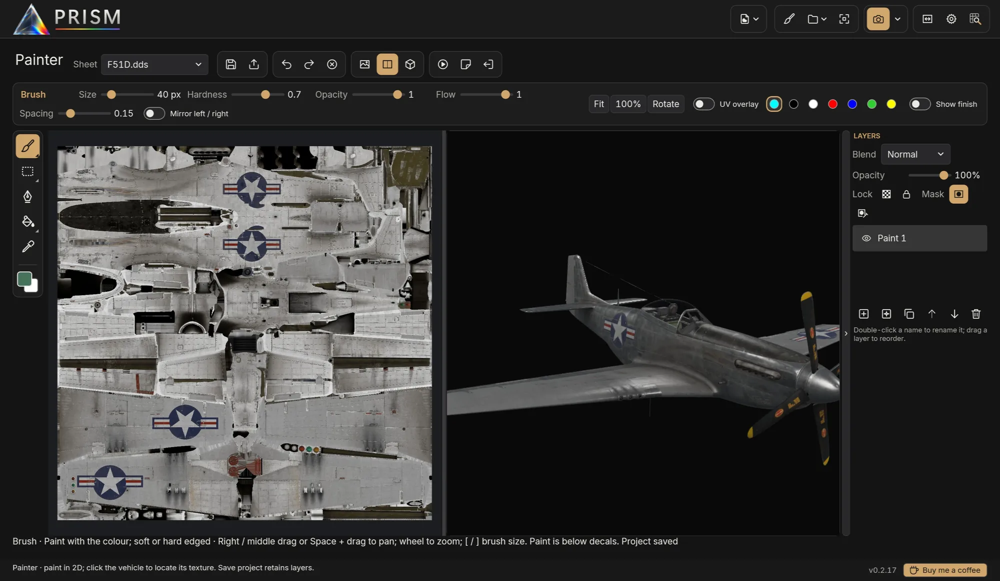
View every livery on the real game models, paint straight onto the skin, light it like a photographer and render it in Blender Cycles — all from your own IL-2 installation.
Free · Windows 10 and 11 · IL-2 Great Battles and IL-2 Korea · Quick start in ten minutes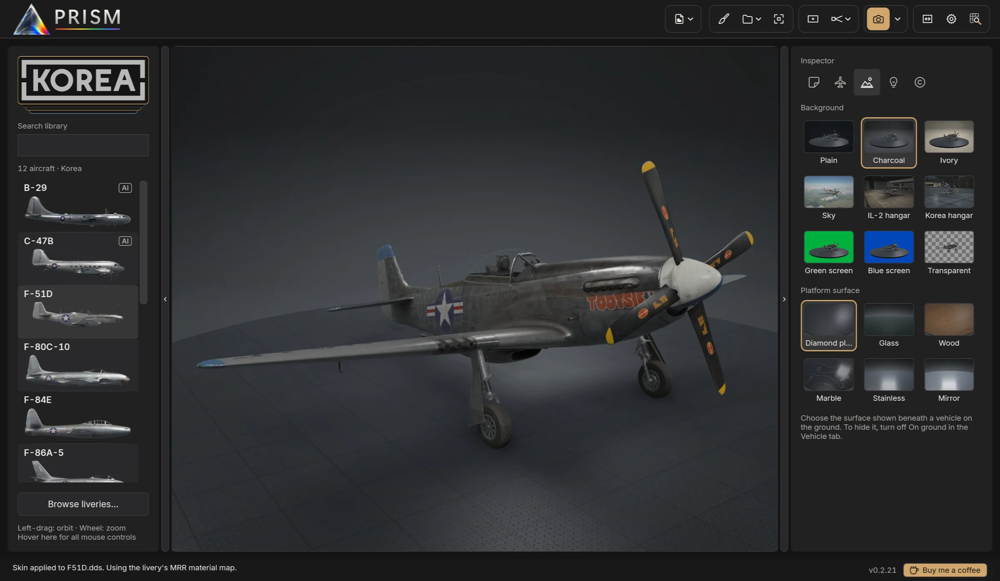
Built around how skins are actually made: live previews while you edit, and renders worth sharing when you're done.
Brushes, selections, layers, masks and a finish layer for matt to bare metal, on the flat sheet and the 3D model side by side.

Studio lighting presets, platforms, photo skies and the game's own hangars.
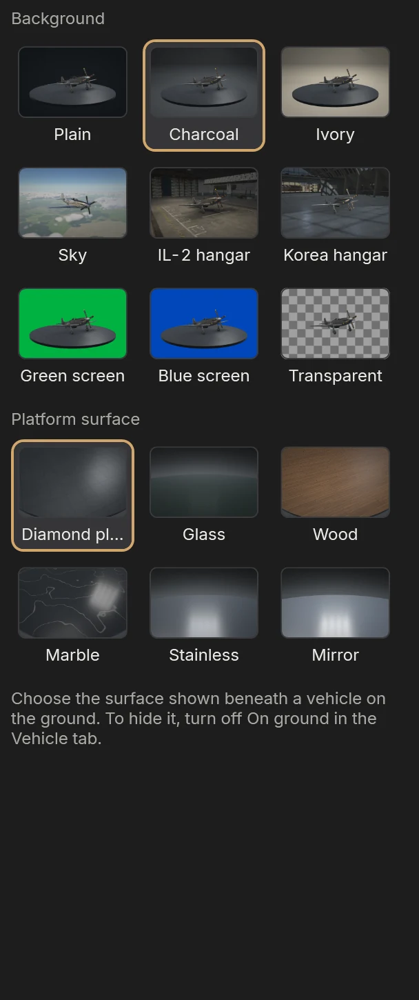
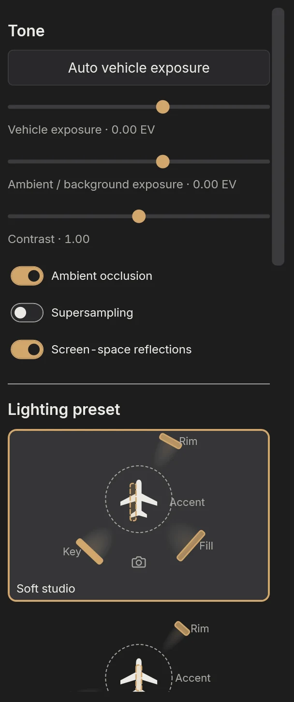
Save in Photoshop or GIMP; the vehicle updates at once.
Stills up to 8K and turntable videos, on NVIDIA, AMD and Intel graphics cards.
Pick on first run, switch any time.
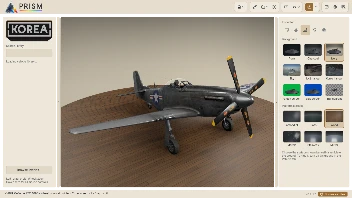
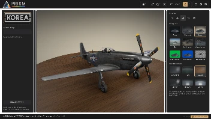
Reflections, spinning propellers, muzzle flashes, tracers and exhaust flames all reach Blender as they are in the viewport.
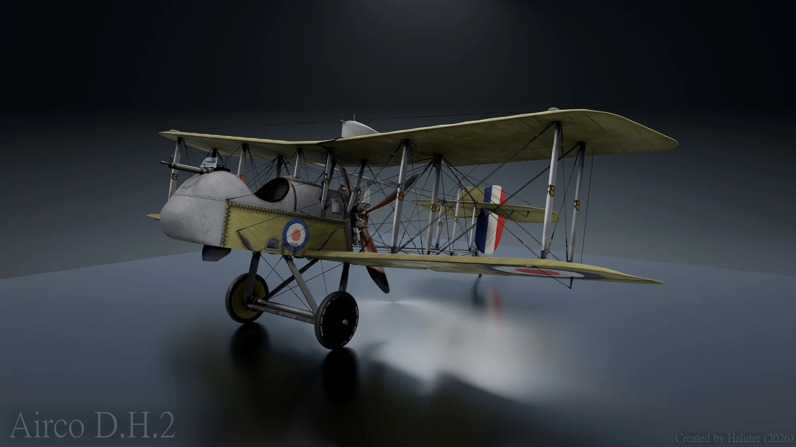
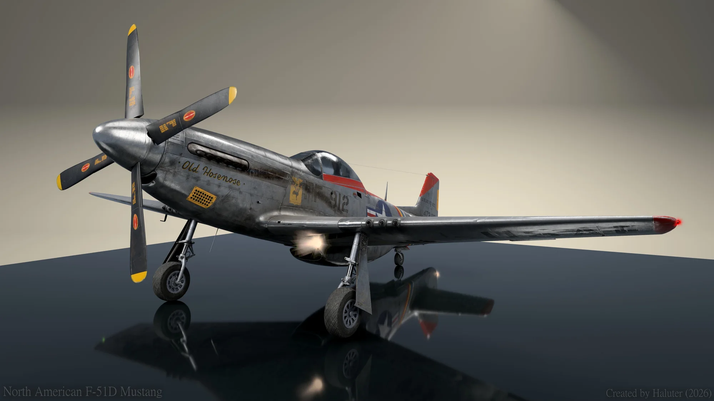
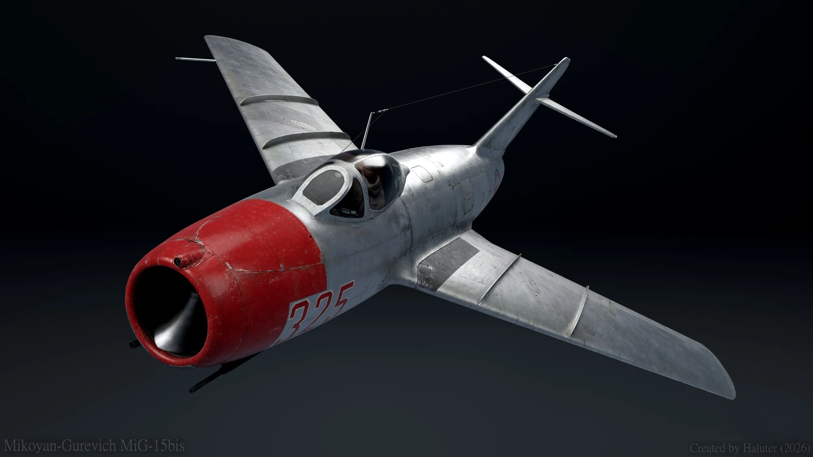
Numbers, names, markings and nose art on the vehicle's surface: linked on both sides, with blend, finish, outline and weathering. Bake them into the skin or keep them editable.
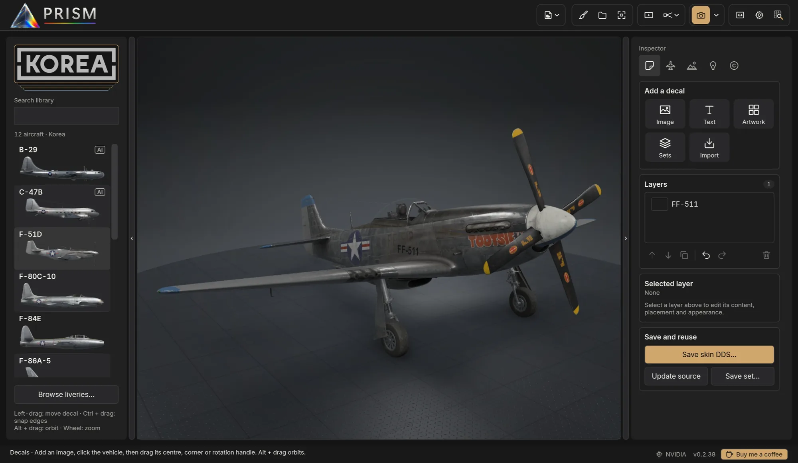
Every livery you're working on, planned, ready or released, as a card drawn in its own livery. Double-click to paint; export straight to the game.
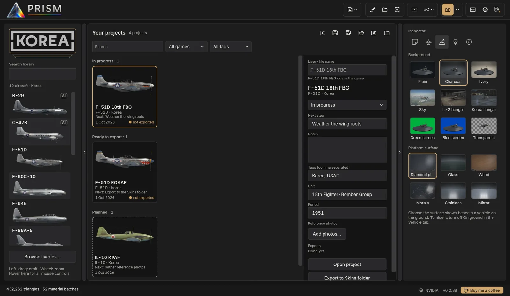
Pictures of every livery, favourites and recently used.
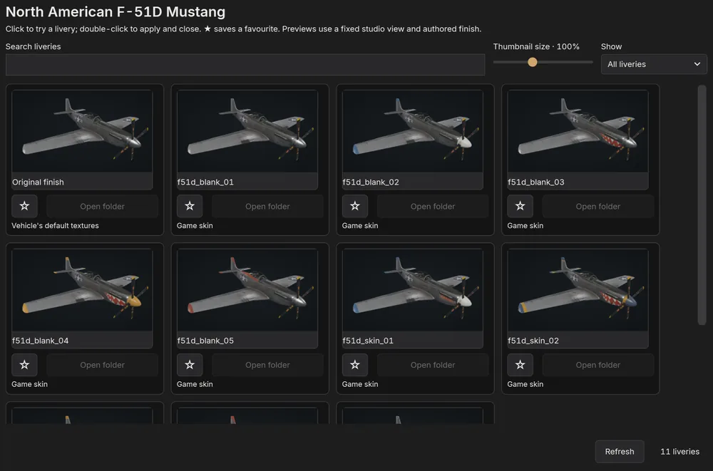
MP4 or GIF of the vehicle turning, from the viewport in seconds or from Cycles.
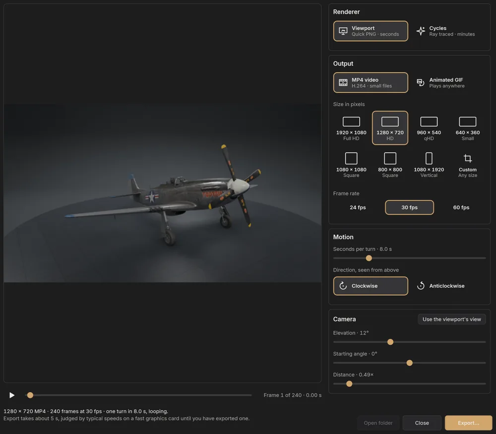
Effects caught as a camera would, in every export.
A complete guide on this site, with screenshots of PRISM as it is today: from your first picture to the Painter, decals, lighting recipes and every shortcut. Settings → User guide opens it from inside PRISM.
Full release notes · PRISM updates itself when you allow it.
See every release and what changed on GitHub.
What's planned and being explored, in no fixed order and with no dates. Tell us what would help you most on the Issues page.
One step builds a finished release: correctly named DDS sheets and finish maps, the HSD preview, an info file, and versions with and without restricted symbols, checked for format, mipmaps and missing alpha or MRR before anything is written.
Design once, then generate a whole squadron: aircraft numbers, pilot names and individual markings, each variant exported with its own skin files and preview.
Carry a finished skin from one variant to another through the 3D surface, for aircraft whose texture layouts differ.
Wear worked out from the vehicle's own shape, each as an editable Painter layer with its own mask. Under way: chipping along panel edges, rivets and real edges, grime in recesses and panel lines, and exhaust streaks along the airflow, with presets by paint type. Still to come: oil streaks, gun soot, sun fading and walkway wear.
Brush straight onto the aircraft, across seams and onto the next sheet, as well as on the flat sheet.
National insignia of WW1, WW2 and Korea in their official variants, drawn to the official proportions in IL-2's own colours and placed at their real size as decals. Under way: US stars and star and bars, RAF roundels and fin flashes, Luftwaffe Balkenkreuze and Soviet red stars. Still to come: WW1 markings, the ROKAF taeguk, stripes, ID bands and kill markings.
RLM, FS 595 and ANA, British standard and Soviet colours with accurate values, in the Painter and for decals.
Lay a historical photograph over the viewport and line the camera up with it, to check markings, positions and sizes against the real aircraft.
Split-screen or flip between two saves, two liveries, or the stock livery and yours, from the same camera.
Formations, hangar pairs and side-by-side livery comparisons, under the same light.
Find a skin on HSD Online, see it on the 3D model and install it into the game in one click. This depends on HSD Online's agreement.
A per-user installer that needs no administrator rights, or a portable zip. Both check for updates.
New to PRISM? Installing and the first start, then the Quick start.
Yes: the user guide, thirteen chapters with screenshots, from the Quick start to every shortcut. PRISM also plays a four-minute tour over its own window, and a Painter tour.
No. PRISM reads the models and liveries straight from your installed IL-2 games. Nothing is copied off your computer.
Yes. The Painter paints colour and finish onto the skin in layers, with the 3D vehicle live beside the sheet, and decals place markings and text. Export the finished skin as DDS, or straight into the game's Skins folder.
Yes. Your skins appear beside the official liveries, and Live DDS reloads the one on screen whenever you save it in your image editor.
The aircraft and ground vehicles of the games you have installed: Great Battles, Flying Circus and Tank Crew from IL-2 Great Battles, and the aircraft of IL-2 Korea, including the AI-only ones.
Only for Cycles renders. Quick PNG exports come straight from PRISM's own viewport, and PRISM tells you if Blender is missing when you ask for a Cycles render.
PRISM checks this repository's releases when it starts. You can install the update, postpone it, skip that version or switch the check off in Settings.
In PRISM, Settings → Report a problem puts its log and a few facts about your PC in a zip, without your Windows user name, and opens the Issues page to attach it to.